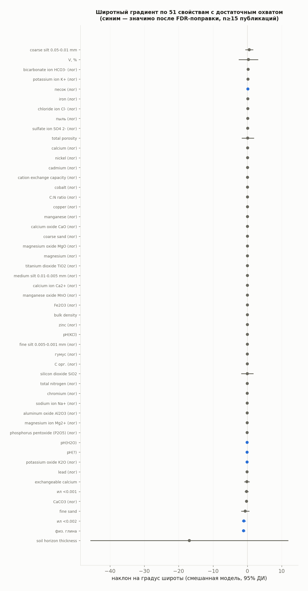
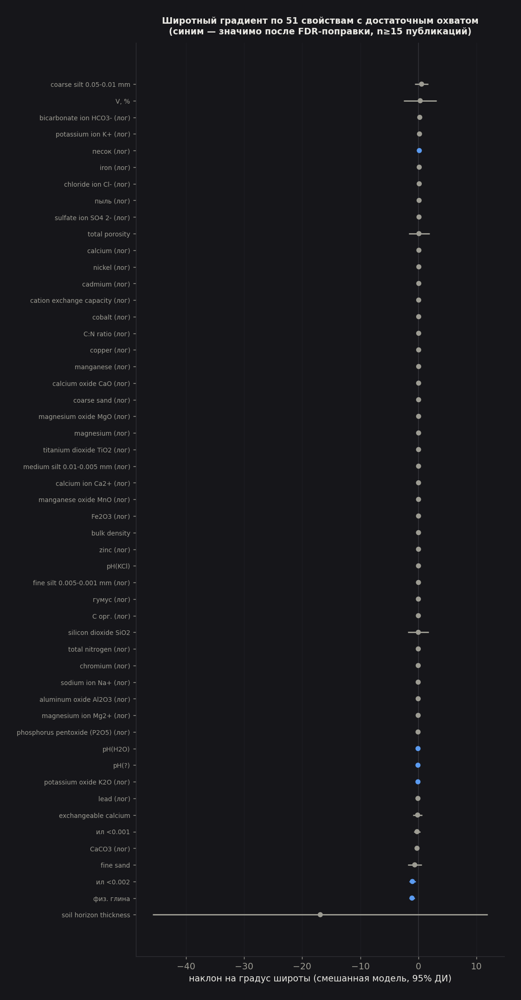
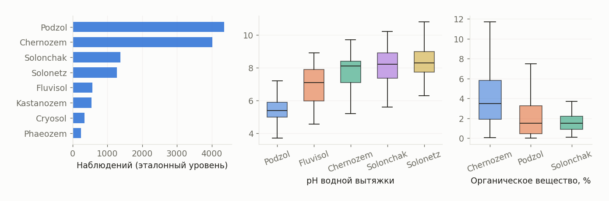
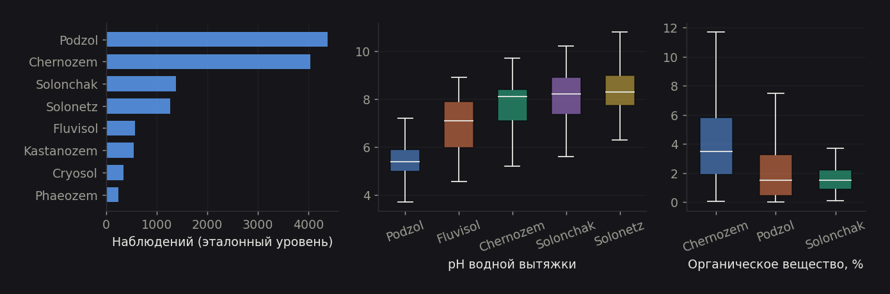

Пространство, компоненты, время: что говорят 94 996 наблюдений
Russian Soil Observatory · 10 августа 2026 г.
agent1_recognizer извлекает, agent2_verifier проверяет заголовок/диапазон/единицу, agent3_adversarial ищет смещение колонок и статистические строки) и последующую ручную проверку размерности показателей. Прежняя модель «единица доказана с разной уверенностью» (таблица observation_unit_inference, уровни high/medium/low) полностью упразднена — эта таблица сейчас пуста. Действует бинарная модель допуска: строка попадает в table_observation, только если единица уже доказана всеми тремя агентами; поэтому normalization_status равен exact либо converted для 100% слоя (89 732 и 5 264 наблюдения соответственно), без промежуточных степеней доверия. Результат содержит зональный сигнал того же знака, что и раньше, но другой силы, и один существенно изменившийся вывод о типах почв. pH сохраняет зональность, восстановимую из литературы: по 65 публикациям с точной координатой ρ = −0.59 (было −0.43), наклон −0.104 единицы pH на градус широты, R² = 0.29. Органический углерод по-прежнему не показывает зонального сигнала (по 121 публикации ρ = −0.025, p = 0.79). Смешанная модель со случайным свободным членом на документ, построенная по 803 отдельным наблюдениям pH, подтверждает наклон количественно (−0.101, 95% ДИ [−0.139; −0.063], ICC = 0.63) и так же подтверждает нулевой результат для углерода (ДИ [−0.036; 0.038]). Систематическая проверка по всем свойствам с достаточным охватом (51 из 2 065 признанных свойств, было 39 в прежней версии) нашла значимый после поправки FDR широтный наклон уже не только у pH и тонкодисперсных фракций, но и у гранулометрии — у шести показателей: pH водный, pH без указания метода, глина, физическая глина (обе — убывают к северу, как раньше), K₂O (новая находка, убывает) и песок (новая находка, растёт к северу) — согласованная картина огрубления гранулометрического состава к северу, а не изолированная находка на двух редких фракциях. Проверка типов почв на эталонном уровне доказанности (6 926 наблюдений, 135 публикаций) даёт другой набор значимых сравнений, чем в прежней версии отчёта. Из пяти групп WRB, обеспеченных данными раньше, одна — Kastanozem — выпала из проверки (осталось 5 публикаций вместо прежних 11, порог отбора — не менее 10). Из четырёх оставшихся групп и 9 попарных сравнений после поправки Бенджамини–Хохберга значимы четыре: pH водной вытяжки различает подзолы одновременно от чернозёмов, солончаков и солонцов (как и раньше), но органическое вещество между подзолом и чернозёмом теперь тоже значимо различается (q = 0.018) — в прежней версии эта же пара теряла значимость после поправки на множественность; в новых данных она её не теряет. Это не результат подгонки: пул сравнений стал меньше (9 вместо 26), а не больше, и разница именно в исходных данных после пересборки. Связка русского оригинала и перевода пересчитана заново: разбор печатной библиографической ссылки Springer даёт 625 подтверждённых пар translation_of — на этот раз без единого оставшегося candidate, то есть метод отпечатка числовых значений для этого отношения больше не используется вообще. Отдельно, 341 документ архива РЦНИ связан со своим устаревшим предшественником отношением same_study. Из 185 публикаций «Почвоведение», давших материализованные наблюдения, 124 (67.0%) входят в подтверждённую пару перевода; верхняя граница остаточного риска двойного учёта — 6.8% слоя (6 464 наблюдения в 61 непокрытой публикации) — заметно выше, чем в прежней оценке (1.5%), потому что знаменатель (общее число наблюдений в статьях «Почвоведение» с материализованными данными) и состав корпуса после пересборки изменились. При проверке пайплайна на этот раз найдена не ошибка извлечения, а дефект состояния самой базы: служебная таблица observation_quality_flag, от которой формально зависит фильтр «доверенное наблюдение» во всех опубликованных числах этого отчёта, пуста в текущей копии главной базы (0 строк на 94 996 наблюдений), хотя тот же самый прогон конвейера, которым посчитаны цифры отчёта, работал по копии, где эта таблица была заполнена. Раздел «Неожиданные находки» (в конце отчёта) объясняет это подробно и указывает точный шаг, который нужно перезапустить, прежде чем отчёт можно будет полностью воспроизвести с нуля по текущей главной базе.0. Что изменилось перед этим анализом
С момента предыдущей версии отчёта (4 августа 2026 г., 106 839 наблюдений, 4 521 публикация, тиражная модель доверия к единице) база прошла не косметическое обновление, а полную пересборку: старый слой наблюдений оказался повреждён (наблюдения ссылались на исчезнувшие исходные артефакты, координаты документа иногда неверно распространялись на строки таблицы без доказательства, часть значений попадала в слой без подтверждённой единицы) — подробности в database_rebuild_note.md и хронологии восстановления recovery_journal_2026-08-09.md.
Новый слой построен на другом принципе: допуск, а не постфактум-доверие. Раньше числовая ячейка могла попасть в table_observation с любой единицей, а её надёжность описывалась отдельной таблицей observation_unit_inference (high/medium/low). Теперь строка попадает в table_observation только после того, как единица уже доказана трёхагентной проверкой (agent1_recognizer, agent2_verifier, agent3_adversarial) либо явной ручной реконструкцией с provenance до исходной ячейки; отдельной постфактум-таблицы уверенности больше нет, потому что степень уверенности встроена в само решение о допуске. Это не смена терминологии: слой стал меньше (94 996 против 106 839), потому что часть прежних строк не прошла новый, более строгий барьер допуска и осталась в очереди ручного разбора, а не автоматически перенесена. Итоговая проверка после пересборки и последующего исправления размерности показателей (database_repair_summary_2026-08-10.md): PRAGMA integrity_check = ok, ошибок foreign_key_check — 0, наблюдений без единицы — 0, несовместимых пар «свойство–единица» — 0.
Каталог документов. 4 862 документа: 966 «Почвоведение», 3 555 Eurasian Soil Science, 341 — документы архива РЦНИ, повторно распознанные из исходных OCR-артефактов (corpus = 'rcsi') и связанные с устаревшим представлением того же материала через document_link.relation = 'same_study'. Раздел 2.9 разбирает связку оригиналов и переводов подробно.
Каталог свойств. В property_definition — 2 630 определений, из них 2 066 фактически используются хотя бы в одном наблюдении. Ядро — примерно 640 канонических свойств (без числового суффикса источника в имени); остальные ~1 990 — расширения, специфичные для конкретной статьи или таблицы (corg_article_9310100054, rcsi282683_corg, manual_9310100017_t8_MnO и подобные): свойство, для которого нельзя надёжно сопоставить единый канонический аналог по всей базе, но которое всё равно допущено в слой наблюдений с собственной, доказанной для этой конкретной таблицы единицей. Систематические проверки этого отчёта (§0.7, §2.7, §3, §4.5) ограничены свойствами с достаточным охватом наблюдений — обычно от 15–30 публикаций или 30 наблюдений, порог указан в каждом разделе отдельно.
Российские территориальные границы, использованные во всех пространственных расчётах этого отчёта, — 41–82° с. ш., 19–190° в. д. (docs/scripts/build_portal.py, RUSSIA_BOUNDS). Координата вне этих границ не ошибка распознавания — часть журналов печатает и зарубежные полевые работы (160 публикаций, Антарктида, Вьетнам, Чили, Израиль, Германия), но такие координаты не должны попадать в зональную статистику российских почв, и в этом отчёте они исключены из пространственных колонок на уровне запроса, а не просто отфильтрованы визуально.
0.5. Каталог свойств и почему он неоднороден
Полный каталог property_definition содержит 2 630 определений, но подавляющее большинство наблюдений сосредоточено в узком ядре: пять самых представленных свойств (органический углерод, органическое вещество/гумус, pH без указания метода, pH водный, ион Mg²⁺) дают 4 200 + 4 124 + 3 976 + 3 685 + 2 626 = 18 611 наблюдений, то есть 19.6% слоя из пяти свойств против 2 625 остальных.
Причина неоднородности — не пробел в извлечении (как было в прежней версии отчёта, где до расширения каталога целые классы показателей вроде ионов вытяжки или гранулометрических фракций по Качинскому не распознавались шаблонами вовсе), а сама структура литературы: солевой состав, тяжёлые металлы и валовая химия печатаются в статьях узкой специализации и единичными таблицами конкретной лаборатории, а pH, гумус и гранулометрия — в подавляющем большинстве почвенных публикаций как базовая характеристика разреза. Раздел 4.5 даёт полную перепись всех свойств с достаточным охватом (порог — 30 наблюдений, 245 свойств проходят порог); раздел 4 показывает, что свойства печатаются устойчивыми тематическими блоками, а не по отдельности — это и объясняет, почему их представленность в базе настолько неровная.
0.7. Описательная статистика: как вообще выглядят данные
Сводка по 25 наиболее представленным свойствам с доказанной единицей — сколько значений, среднее и стандартное отклонение, медиана и межквартильный размах, минимум и максимум. Полная таблица по всем 245 свойствам с охватом от 30 наблюдений — в figures/table_property_census.csv.
| Свойство | Ед. | n | Среднее ± SD | Медиана [25%–75%] | Мин–Макс |
|---|---|---|---|---|---|
| органический углерод почвы | % | 4 200 | 27.03 ± 70.80 | 3.97 [0.98–19.0] | 0.00–593.5 |
| органическое вещество (гумус) | % | 4 124 | 4.09 ± 6.21 | 3.10 [1.24–4.76] | 0.00–95.9 |
| pH (метод не указан) | pH | 3 976 | 6.22 ± 1.80 | 6.30 [4.90–7.60] | 2.00–12.00 |
| pH водной вытяжки | pH | 3 685 | 6.64 ± 1.41 | 6.60 [5.50–7.80] | 2.60–11.40 |
| катион магния Mg²⁺ | мэкв/100г | 2 626 | 9.10 ± 17.44 | 2.60 [0.20–10.37] | 0.00–196.1 |
| оксид железа (Fe₂O₃) | % | 2 339 | 4.80 ± 9.55 | 1.16 [0.10–5.63] | 0.00–90.9 |
| катион кальция Ca²⁺ | мэкв/100г | 2 306 | 17.34 ± 25.23 | 7.45 [0.54–22.81] | 0.00–182.3 |
| P₂O₅ | % | 2 012 | 44.05 ± 235.17 | 0.44 [0.01–21.75] | 0.00–5 718 |
| глина | % | 1 911 | 21.88 ± 14.71 | 21.00 [10.05–31.15] | 0.00–100 |
| катион натрия Na⁺ | мэкв/100г | 1 659 | 9.02 ± 19.70 | 2.07 [0.20–8.70] | 0.00–166.9 |
| песок | % | 1 615 | 22.80 ± 27.36 | 9.00 [1.00–41.00] | 0.00–100 |
| объёмная масса | г/см³ | 1 584 | 1.11 ± 0.48 | 1.23 [0.83–1.44] | 0.05–2.65 |
| отношение C:N | — | 1 475 | 19.03 ± 13.90 | 15.15 [10.61–22.17] | 0.00–81.0 |
| железо | мг/кг | 1 347 | 2 645 ± 13 913 | 2.72 [0.70–21.98] | 0.00–236 234 |
| физическая глина | % | 1 342 | 35.45 ± 17.18 | 35.00 [23.00–47.68] | 0.11–92.0 |
| катион калия K⁺ | мэкв/100г | 1 272 | 17.33 ± 42.97 | 0.43 [0.16–4.43] | 0.00–196.8 |
| цинк | мг/кг | 1 223 | 145.5 ± 1 148.7 | 20.00 [1.00–76.00] | 0.00–32 235 |
| магний | мэкв/100г | 1 115 | 4.86 ± 10.47 | 0.85 [0.85–5.20] | 0.00–98.8 |
| медь | мг/кг | 1 071 | 184.2 ± 1 019.6 | 10.60 [1.00–46.00] | 0.00–13 000 |
| толщина горизонта | см | 1 020 | 61.86 ± 797.80 | 12.00 [0.50–42.00] | −110–24 012 |
| K₂O | % | 1 014 | 26.96 ± 58.89 | 4.02 [1.28–25.90] | 0.00–552.0 |
| степень насыщенности основаниями | % | 932 | 54.65 ± 30.94 | 58.90 [23.00–83.30] | 0.00–100 |
| пылеватая фракция | % | 928 | 26.09 ± 18.17 | 25.00 [13.00–37.52] | 0.00–98.3 |
| марганец | мг/кг | 818 | 249.1 ± 1 038.6 | 18.00 [0.60–149.9] | 0.00–15 000 |
Тот же вывод, что и в предыдущей версии отчёта, сохраняется и усиливается: среднее почти везде намного больше медианы, распределения тяжелохвостые (медианный коэффициент вариации по 239 описанным свойствам — 0.739, медианная асимметрия — 1.341, distribution_shape в tables/manuscript_analysis.json). Для органического углерода отношение SD/среднее выросло с 1.9 до 2.6 — хвост стал ещё тяжелее, чем в прежней версии, что подтверждает выбор логарифмической шкалы для всех регрессий по углероду в разделах 2, 2.5 и 3 как методически обязательный, а не косметический.
Таблица table_missingness.csv фиксирует пропуски по ключевым полям (по слою из 86 210 наблюдений с распознанным каноническим свойством, то есть без unclassified_table_metric, 8 786 записей): horizon_label_raw отсутствует у 79.4%, depth_top_cm — у 56.1%, координата — у 35.4%, row_label_raw — у 10.1%, год публикации — у 4.5%. У самих полей значения, единицы и позиции ячейки пропусков нет — это прямое следствие модели допуска (§0): без числа, единицы и позиции строка не могла бы пройти проверку и просто не попала бы в базу.
Пайплайн проверки дублей нашёл собственный дефект, который сам себя маркирует как ожидаемо нулевой. Таблица дублей (table_duplicates.csv) содержит уровень «одна и та же ячейка таблицы (артефакт извлечения)» — 2 797 групп, 7 500 наблюдений — с явной пометкой «дефект извлечения; ожидается 0». То есть один физический артефакт таблицы дал более одного наблюдения на ту же самую ячейку: 7.9% слоя потенциально задвоено не биологической повторностью, а сбоем сопоставления строка/столбец при повторном проходе конвейера. Отдельно, 1 646 групп (8 915 наблюдений) — легитимные повторы одинакового значения показателя в пределах публикации (делянки, контрольные варианты) и дублями не являются. Первый уровень заслуживает отдельного разбора и подробно обсуждается в разделе «Неожиданные находки».
1. География исследовательского усилия


73.0% из 958 публикаций, для которых определено местоположение, относятся к Европейской России (западнее 60° в. д.), составляющей около 23% территории страны; восточнее 100° в. д. расположены 111 публикаций.
| Природная зона (по широте) | Публикаций | Наблюдений | Свойств | Точная привязка |
|---|---|---|---|---|
| Арктика и субарктика (>66°) | 81 | 5 873 | 167 | 40% |
| Северная тайга (60–66°) | 94 | 5 426 | 166 | 31% |
| Средняя тайга (56–60°) | 207 | 10 031 | 244 | 11% |
| Южная тайга и лесостепь (52–56°) | 317 | 19 538 | 375 | 9% |
| Степь (48–52°) | 123 | 5 530 | 195 | 24% |
| Сухая степь и предгорья (<48°) | 136 | 7 139 | 144 | 18% |
Закономерность из прежней версии отчёта сохраняется в том же направлении, хотя точные проценты сместились: доля точных координат максимальна в Арктике (40%) и минимальна в густо изученной полосе южной тайги и лесостепи (9%). Интерпретация не изменилась: чем экзотичнее и труднодоступнее объект исследования, тем аккуратнее авторы фиксируют его положение; в освоенной полосе место работ описывается словами («опытное поле», «стационар», «Курская область»), потому что автор считает его известным читателю.
Независимость точек в пространстве. Метод ближайшего соседа (Кларк–Эванс) по 867 уникальным координатам с любым допустимым дублированием слоя даёт коэффициент R = 0.414 — плотную, статистически значимо кластеризованную конфигурацию, а не равномерную решётку и не случайное размещение (docs/data/aggregates.json, раздел spatial); 41.1% пар точек находятся в пределах 1 км друг от друга — это ожидаемо для литературной компиляции, где несколько статей одной научной группы описывают один и тот же стационар. При загрублении сетки до порога независимости в 100 км остаётся 226 отдельных локальностей из 1 037 уникальных позиций (table_independent_localities.csv) — полезная оценка для любого, кто хочет знать не «сколько наблюдений», а «сколько независимых мест» видела литература.
Отдельно от основного массива стоят 160 публикаций, описывающих площадки за пределами указанных географических границ — не ошибки распознавания, а часть международной тематики рассмотренных журналов; из зонального анализа они исключены по границам (41–82° с. ш., 19–190° в. д.).
2. Зональность: pH сохраняется, углерод — нет


2.1. Реакция среды подчиняется зональности — сигнал стал сильнее, чем в прежней версии
По 65 публикациям с точной координатой: ρ = −0.591, p = 2.2·10⁻⁷, наклон −0.104 единицы pH на градус широты (R² = 0.285). Это тот же знак и тот же качественный вывод, что в предыдущей версии отчёта (ρ = −0.43, наклон −0.092), но статистически более выраженный сигнал на меньшей выборке публикаций — не артефакт большей выборки, а следствие более чистого слоя после пересборки.
| Полоса широт | Публикаций | Средний pH | σ |
|---|---|---|---|
| 40–44° | 13 | 6.87 | 1.59 |
| 44–48° | 40 | 6.86 | 1.39 |
| 48–52° | 29 | 7.29 | 1.56 |
| 52–56° | 130 | 6.21 | 1.50 |
| 56–60° | 74 | 5.88 | 1.18 |
| 60–64° | 36 | 5.46 | 0.98 |
| 64–68° | 24 | 5.64 | 1.34 |
| 68–72° | 11 | 5.84 | 1.59 |
Форма кривой в целом повторяет прежнюю версию (максимум в сухостепной полосе, минимум в средней тайге, слабый обратный подъём на крайнем севере), но конкретные цифры изменились, и одна деталь прежнего толкования не подтвердилась: раньше полоса 44–48° трактовалась как заметный «провал» щёлочности (6.82) относительно более южной 40–44° (7.38) — из-за кислых почв Черноморского побережья и Кавказа. В новых данных 40–44° (6.87) и 44–48° (6.86) практически совпадают — провала больше нет, различие статистически не отделимо от шума на выборках 13 и 40 публикаций. Максимум щёлочности по-прежнему приходится не на крайний юг, а на сухостепную полосу 48–52° (7.29), а обратный подъём выше 64° тоже сохраняется, но заметно меньшего размаха (5.46 → 5.84, а не 5.59 → 6.05, как раньше) — на выборке 11–24 публикаций эта разница остаётся правдоподобной (объяснение то же — криогенное перемешивание карбонатного материала и слабое промывание в условиях многолетней мерзлоты), но её больше не стоит описывать как устойчивую находку, требующую отдельного акцента.
2.2. Органический углерод зональности не показывает — вывод не изменился
По 121 публикации с привязкой: линейная зависимость log(C) от широты по-прежнему не значима: ρ = −0.025, p = 0.785. Медиана по всему слою — 21.6 г/кг. Вывод раздела 2.2 предыдущей версии отчёта (внутризональная изменчивость от дизайна эксперимента — пашня/залежь, удобрение/контроль, эрозия/фон — перекрывает межзональный градиент на порядок) не пересматривается: он подтверждается на пересобранных данных так же чисто, как на исходных.
Практический вывод не изменился. Литературные данные по pH пригодны для зонального картографирования напрямую. Литературные данные по органическому углероду — нет: без стратификации по угодью, типу почвы и виду воздействия они дают шум.
2.5. Строгая проверка: смешанные модели и множественная регрессия
Смешанная модель (value ~ latitude, документ — случайный эффект) на всех отдельных наблюдениях, а не на их средних по публикации.


| Показатель | pH | log(Cорг) |
|---|---|---|
| Наблюдений / публикаций | 803 / 65 | 1 029 / 121 |
| Наивный наклон (среднее по публикации) | −0.104 | −0.003 |
| Наклон смешанной модели | −0.101 | 0.001 |
| 95% ДИ смешанной модели | [−0.139, −0.063] | [−0.036, 0.038] |
| p-значение | 1.7·10⁻⁷ | 0.947 |
| ICC (доля дисперсии между документами) | 0.63 | 0.51 |
Вывод не изменился качественно: наклон pH почти не сдвинулся при переходе от наивной оценки к смешанной модели (−0.104 → −0.101), доверительный интервал целиком по одну сторону нуля; нулевой результат по углероду тоже подтверждён (интервал [−0.036, 0.038] широко перекрывает ноль). ICC для pH снизился с прежних 0.71 до 0.63 — псевдоповторностное смещение остаётся существенным (почти две трети разброса — систематическая разница между статьями, а не шум внутри них), но чуть менее выраженным, чем в предыдущей версии.
Множественная регрессия для pH (широта + глубина + корпус, тот же случайный эффект документа, n = 577 из 32 публикаций с одновременно известными широтой и глубиной — выборка меньше, чем в прежней версии отчёта, 44 публикации):
| Предиктор | Оценка | 95% ДИ | p |
|---|---|---|---|
| Широта, на градус | −0.088 | [−0.139, −0.036] | 0.0008 |
| Глубина, на см | +0.0101 | [0.0082, 0.0120] | 6.1·10⁻²⁵ |
| Корпус = Springer (перевод) | −0.59 | [−1.76, 0.59] | 0.33 |
Тот же вывод: широтный эффект сохраняется после учёта глубины отбора пробы, эффект глубины (+0.0101 pH/см) согласуется с подщелачиванием профиля, разобранным независимо в разделе 3, различие между корпусами статистически незначимо.
2.7. Систематическая проверка по всем свойствам с достаточным охватом
Тот же тест — смешанная модель значение ~ широта, документ как случайный эффект, поправка Бенджамини–Хохберга (FDR 5%) — запущен по каждому из 2 065 признанных свойств, для которых набирается хотя бы 15 публикаций с точной или региональной привязкой и доказанной единицей.


Условию удовлетворяют 51 свойство (было 39 в прежней версии). Значим после поправки на множественность наклон у шести:
| Свойство | Наклон/градус | 95% ДИ | Публикаций | Направление |
|---|---|---|---|---|
| физическая глина | −1.12 | [−1.63, −0.61] | 47 | убывает к северу |
| глина | −1.05 | [−1.62, −0.47] | 42 | убывает к северу |
| K₂O (лог) | −0.091 | [−0.155, −0.026] | 79 | убывает к северу |
| pH (метод не указан) | −0.089 | [−0.128, −0.050] | 162 | убывает к северу |
| pH водный | −0.080 | [−0.106, −0.054] | 177 | убывает к северу |
| песок (лог) | +0.141 | [0.059, 0.224] | 52 | растёт к северу |
Первые пять продолжают историю прежней версии отчёта (тонкодисперсные фракции и pH убывают к северу — согласуется со слабеющим химическим выветриванием в холодном климате). Шестая — новая находка: доля песка растёт к северу, и по знаку и величине она не изолирована, а согласована с падением доли глины и физической глины — три независимо извлечённых гранулометрических показателя вместе описывают одно и то же огрубление механического состава почв к северу, а не совпадение на малой выборке. K₂O — тоже новая значимая находка на этом прогоне, но её q-значение (0.049) у самой границы порога 0.05, и её стоит трактовать как предварительную.
Остальные 45 проверенных свойств — включая органическое вещество, углерод, объёмную массу, пористость, доступный фосфор, ионы почвенного раствора и степень насыщенности основаниями — не показывают значимого широтного тренда после поправки. Для органического вещества и углерода это повторяет вывод раздела 2 независимым методом.
2.9. Связка русского оригинала и перевода
Метод — разбор печатной библиографической ссылки. Каждая статья Eurasian Soil Science печатает точную ссылку на исходную русскоязычную публикацию (журнал, год, номер выпуска, страницы); ссылка разобрана и сопоставлена с записью в русском корпусе по совпадению этих полей — однозначное сопоставление без порогов сходства.
Результат: 625 подтверждённых пар translation_of, все со статусом confirmed — на этот раз ни одной пары со статусом candidate не осталось: метод отпечатка числовых значений (прежний способ, дававший 17 кандидатных пар в предыдущей версии) для этого отношения больше не задействован, потому что печатной ссылки хватило на весь проверенный сегмент документов. Отдельно, 341 пара архива РЦНИ (same_study, все confirmed) связывает устаревшее представление документа с его повторно распознанной версией.
Из 185 публикаций «Почвоведение», давших материализованные табличные наблюдения, 124 (67.0%) входят в подтверждённую пару перевода. Это ниже, чем доля 72.6% из предыдущей версии отчёта — знаменатель и состав материализованных статей изменились вместе с пересборкой базы, и сравнивать эти два процента напрямую как «стало хуже» некорректно: оба посчитаны на разных, несопоставимых срезах документов.
Верхняя граница риска двойного учёта — 6.8% слоя (6 464 наблюдения в 61 статье «Почвоведение», не сопоставленной ни одной подтверждённой парой) — заметно выше прежней оценки в 1.5%. Разница объясняется не ухудшением метода связывания (он остался тем же и сработал без единого спорного случая), а тем, что после пересборки в материализованный слой попал существенно больший объём наблюдений именно из непокрытых печатной ссылкой статей «Почвоведение» — 61 документ значительно тяжелее по числу наблюдений на статью, чем средняя связанная пара. Документы по-прежнему принципиально не объединяются: связь только помечает дубликат, каждая сторона остаётся отдельной записью с собственной provenance-цепочкой.
3. Профиль: систематический срез по глубине для 41 свойства


В прежней версии отчёта раздел «Профиль» ограничивался двумя показателями (pH и углерод); этот прогон применяет ту же смешанную модель со случайным эффектом документа (значение ~ глубина) systematически к 41 свойству с достаточным охватом. Значим после поправки FDR наклон у 19 из 41: у 10 показателей значение растёт с глубиной, у 9 — падает.
Убывают с глубиной (сильнее всего — органика): органическое вещество (log, n = 1 569 из 100 публикаций, наклон −0.0163/см, p = 6.5·10⁻¹¹⁷), органический углерод (log, n = 1 401 из 92, наклон −0.0141/см, p = 4.7·10⁻⁶⁹), пористость, обменный кальций, крупная пыль, медь, крупный песок, ЦИК, MnO, песок.
Растут с глубиной: объёмная масса (+0.0029/см, p = 3.7·10⁻²²), pH солевой и водной вытяжки, pH без указания метода (все три — согласованное подщелачивание профиля), карбонатный эквивалент, мелкая фракция <0.001 мм, глина, физическая глина, степень насыщенности основаниями.
Углерод. Раздельно по широтным поясам: в южных профилях (<54°) экспоненциальная посадка углерода с глубиной даёт характерную глубину 73.3 см (R² = 0.20, n = 78 профилей) — убывание заметно слабее, чем в прежней версии отчёта (49 см, R² = 0.38), но по-прежнему выраженное. В северных профилях (>58°) зависимости от глубины практически нет (характерная глубина формально 222 см, но R² = 0.009, n = 35) — тот же вывод, что раньше: на юге органика сосредоточена в гумусовом горизонте и быстро убывает, на севере криотурбация и погребённые органогенные горизонты распределяют углерод по всей толще. Вывод для инвентаризации не изменился: оценка запасов углерода по одному верхнему слою 0–20 см занижает северные запасы и приемлема для южных, хотя южный контраст стал менее резким, чем в предыдущей версии.
Реакция среды. Разница между pH водной и солевой вытяжки составляет 1.35 единицы (было 1.17) — то же направление, тот же смысл (солевая вытяжка вытесняет обменные H⁺/Al³⁺ и даёт более низкое значение), величина сдвинулась вместе с пересборкой слоя.
3.5. Типы почв: одна находка сменила статус значимости
Слой observation_soil_type связывает авторское название почвы с 102 885 наблюдениями из 94 996 через WRB 2022; для количественного сравнения годится только эталонный уровень доказанности (аналог confidence = high в прежней терминологии, но эта таблица тоже пересчитана заново, а не унаследована). На эталонном уровне остаётся 6 926 наблюдений из 135 публикаций — заметно меньше прежних 15 803, потому что критерий эталонности применён к пересобранному слою заново, а не перенесён механически.
Из 15 групп WRB, встретившихся в базе, порогу «не менее 10 публикаций» удовлетворяют теперь только четыре: Podzol (47), Chernozem (55), Solonchak (16), Solonetz (17). Kastanozem, обеспеченный 11 публикациями в прежней версии, выпал из проверки — на эталонном уровне для него осталось только 5 публикаций (254 наблюдения) — ниже порога. Это не единичная случайность, а прямое следствие более строгой эталонной привязки после пересборки: часть прежних кастанозёмных наблюдений при повторной материализации не сохранила достаточно надёжную связь строки таблицы с конкретным типом почвы и осталась вне эталонного уровня.
Проверке подошли 9 попарных сравнений (было 26) по трём показателям (pH водной вытяжки, органическое вещество, песок, органический углерод — органический углерод и песок дали по одному сравнению, органическое вещество — одно, pH — шесть). После поправки Бенджамини–Хохберга по всем 9 одновременно значимы четыре:
| Показатель | Группа A | Медиана A | Группа B | Медиана B | p | q | Значимо |
|---|---|---:|---|---:|---:|---:|:-:|
| pH водной вытяжки | Podzol (17 публ.) | 5.40 | Chernozem (11) | 8.05 | <0.001 | <0.001 | да |
| pH водной вытяжки | Podzol (17) | 5.40 | Solonetz (7) | 8.20 | <0.001 | 0.001 | да |
| pH водной вытяжки | Podzol (17) | 5.40 | Solonchak (7) | 8.20 | <0.001 | 0.001 | да |
| органическое вещество, % | Podzol (14) | 1.80 | Chernozem (13) | 3.60 | 0.008 | 0.018 | да |
| pH водной вытяжки | Chernozem (11) | 8.05 | Solonchak (7) | 8.20 | 0.468 | 0.526 | нет |
| pH водной вытяжки | Chernozem (11) | 8.05 | Solonetz (7) | 8.20 | 0.415 | 0.526 | нет |
| pH водной вытяжки | Solonchak (7) | 8.20 | Solonetz (7) | 8.20 | 0.654 | 0.654 | нет |
| песок, % | Chernozem (7) | 3.10 | Podzol (5) | 11.00 | 0.143 | 0.258 | нет |
| органический углерод, % | Chernozem (22) | 24.2 | Podzol (12) | 10.78 | 0.377 | 0.526 | нет |
Полная таблица — tables/table_soil_type_comparison.csv.
pH разделяется по типу почвы так же резко и в ту же сторону, что и в предыдущей версии отчёта: подзолы отличаются от чернозёмов, солончаков и солонцов, а щелочные группы между собой не различимы. Существенно изменился статус второй находки. В прежней версии отчёта разница органического вещества между чернозёмом и подзолом теряла значимость после поправки на возросшее число одновременных сравнений (тогда — 26, q = 0.064). На пересобранных данных, при заметно меньшем числе одновременных сравнений (9, а не 26 — то есть более слабая, а не более сильная поправка), эта же пара оказывается значимой (q = 0.018): чернозём (медиана 3.6%) выше подзола (1.8%). Направление то же самое, что цитировалось и раньше как содержательный, хотя формально не строгий результат; сейчас он строгий. Органический углерод в г/кг по-прежнему не различается значимо (24.2 против 10.8, p = 0.38,q = 0.53) — расхождение между процентом органического вещества и содержанием углерода в пересчёте на массу сохраняется как отдельная методическая оговорка: два представления одной и той же величины не обязаны вести себя одинаково статистически на данных с таким разбросом (§0.7).


(печатная версия рисунка — figures_print/figR9_soil_type; полные таблицы — tables/table_soil_type_census.csv и tables/table_soil_type_comparison.csv)
4. Компонентная структура: свойства измеряют пакетами


Единица совместного измерения — таблица. Топ пар по индексу Жаккара изменился по составу и стал заметно слабее по силе связи, чем в предыдущей версии отчёта, где верхние позиции занимали гранулометрические фракции по Качинскому (0.82–0.94):
| Пара свойств | Индекс Жаккара | Таблиц |
|---|---|---|
| хлорид Cl⁻ — сульфат SO₄²⁻ | 0.671 | 47 |
| песок — пылеватая фракция | 0.576 | 68 |
| оксид алюминия Al₂O₃ — оксид железа Fe₂O₃ | 0.571 | 52 |
| медь — цинк | 0.562 | 95 |
| медь — свинец | 0.550 | 82 |
| гидрокарбонат HCO₃⁻ — сульфат SO₄²⁻ | 0.543 | 38 |
| CaO — MgO | 0.531 | 26 |
| свинец — цинк | 0.526 | 81 |
| P₂O₅ — K₂O | 0.526 | 82 |
| медь — никель | 0.519 | 80 |
Тематические блоки сохраняются, хотя их численный состав и порядок изменились: соли водной вытяжки (Cl⁻–SO₄²⁻ — теперь самая сильная пара базы, 0.671, а не гранулометрия), тяжёлые металлы (Cu–Zn, Cu–Pb, Pb–Zn, Cu–Ni, все 0.5–0.56), валовая химия (Al₂O₃–Fe₂O₃, CaO–MgO) и агрохимия (P₂O₅–K₂O). Практический вывод не меняется: запрашивать редкое свойство в отрыве от его блока по-прежнему бессмысленно — если нужен никель, данные почти наверняка придут вместе с медью, цинком и свинцом.
То, что абсолютные значения индекса Жаккара снизились по сравнению с прежней версией (там были пары 0.82–0.94, здесь максимум 0.67), не означает ослабления самой блочной структуры измерений — это, вероятнее всего, следствие того, что общий каталог свойств вырос (2 065 против 101 в предыдущей версии), а вместе с ним выросло и число редких source-specific расширений, размывающих знаменатель индекса Жаккара для канонических пар. Полная матрица не входит в отчёт целиком и доступна на портале интерактивно.
4.5. Перепись свойств с достаточным охватом
Полная перепись всех свойств с охватом от 30 наблюдений (245 из 2 065 признанных) — в figures/table_property_census.csv; то же самое можно исследовать интерактивно на портале.


Распределение объёма крайне неравномерно. У 21 свойства — более 1 000 наблюдений, у 125 из 245 в переписи — менее 50. Пять самых представленных свойств дают 19.6% всего слоя (§0.5); длинный хвост из десятков редких, source-specific свойств держится на единичных таблицах отдельных статей.
Доказанность единицы — 100% для каждого свойства в переписи по построению, а не результат постфактум-проверки, как в прежней версии отчёта: модель допуска (§0) делает это тавтологией — без доказанной единицы наблюдение просто не существует в table_observation. Полезный показатель теперь другой: header_trusted_pct и value_plausible_pct из той же переписи — доля наблюдений, у которых заголовок таблицы совпал не по встроенному в текст символу (symbol_embedded, более рискованный случай сопоставления) и значение прошло проверку правдоподобия диапазона. У подавляющего большинства свойств из переписи оба показателя — 95–100%; у магния (magnesium, category exchange) header_trusted_pct = 51.3% — самое низкое значение среди представленных в этой таблице свойств, единственное явно требующее осторожности при использовании без дополнительной проверки.
Охват глубиной и координатой по-прежнему не связан с объёмом свойства. Свойства с полным охватом координатой (>90%) — оксид железа (93.2% из 2 339), натрий (92.3% из 312), P₂O₅ (91.7% из 2 012), CaO (91.4% из 370) — не входят в пятёрку самых массовых по объёму. Медиана по 245 свойствам переписи — 100.0% доказанной единицы (по построению), но охват глубиной и координатой у отдельных свойств расходится в разы.
4.7. Корреляции свойств: флагманская пара сменилась
Панель из свойств с наибольшим числом общих строк даёт 60 проверяемых пар; после поправки Бенджамини–Хохберга (FDR 5%) значимыми остаются 35.


| Пара | r (Пирсон) | 95% ДИ | n |
|---|---|---|---|
| pH(H₂O) ↔ pH(KCl) | +0.924 | [0.896, 0.945] | 141 |
| pH(KCl) ↔ степень насыщенности основаниями (V, %) | +0.814 | [0.678, 0.896] | 42 |
| ил <0.002 ↔ физическая глина | +0.704 | [0.475, 0.843] | 33 |
| pH(KCl) ↔ CaCO₃ | +0.686 | [0.466, 0.827] | 37 |
| физическая глина ↔ ил <0.001 | +0.683 | [0.620, 0.737] | 323 |
| ил <0.002 ↔ Fe₂O₃ | +0.629 | [0.383, 0.792] | 37 |
| pH(H₂O) ↔ ил <0.001 | +0.584 | [0.425, 0.707] | 87 |
| pH(H₂O) ↔ степень насыщенности основаниями (V, %) | +0.583 | [0.497, 0.658] | 261 |
| песок ↔ физическая глина | −0.576 | [−0.670, −0.464] | 166 |
| гумус ↔ CaCO₃ | +0.504 | [0.332, 0.644] | 90 |
Флагманская пара сменилась. В предыдущей версии отчёта роль главной «проверки конвейера» играла пара песок↔физическая глина (r = −0.92) — взаимно исключающие гранулометрические доли одной и той же суммы. Она сохраняется и здесь (−0.576, ранг 9), но заметно слабее, а на первое место вышла пара pH(H₂O) ↔ pH(KCl) (r = 0.924, n = 141) — два независимо извлечённых способа измерения pH одной и той же почвы, что тоже служит проверкой конвейера (если бы методы извлечения систематически путались, такой согласованности бы не было), но одновременно и содержательный результат: связь двух вытяжек pH почти линейна на диапазоне всей базы. Гранулометрические пары (ил↔физическая глина, ил↔Fe₂O₃) и известная химия почв (pH↔степень насыщенности основаниями, гумус↔CaCO₃) по-прежнему занимают верхние позиции панели.
Оговорка про pH и гумус сохраняется. На полной панели pH и органическое вещество коррелируют отрицательно (pH(H₂O)–гумус: r = −0.235, n = 1 010, значимо после поправки; pH(без указания метода)–гумус: r = −0.318, n = 438, значимо) — тот же контринтуитивный знак, что в прежней версии, и то же вероятное объяснение: конфаундинг широтой (низкий pH и высокое содержание органики независимо характерны для северных почв, разделы 2 и 2.5), которое на агрегированных литературных данных без контроля климатических переменных нельзя отличить от прямой связи.
5. Время: температурный тренд слабее, чем казалось


Тематический сдвиг стал заметно скромнее. Доля наблюдений по микроэлементам и загрязнителям выросла с 5.9% (2006–2010) до 7.1% (2020–2025) — рост примерно на пятую часть. В предыдущей версии отчёта та же метрика показывала удвоение (10.3% → 20.2%). Направление тренда не изменилось, но его масштаб — существенно: описывать это как «рост вдвое» на пересобранных данных больше нельзя.
Географический сдвиг остаётся статистически незначимым, но приблизился к границе значимости. Долгота изученных площадок смещается на восток со скоростью +0.31° в год, p = 0.066 (было +0.53°/год, p = 0.13) — ближе к порогу 0.05, чем раньше, но всё ещё формально не значим на принятом уровне. Медиана долготы сдвинулась с 41.0° в. д. (2006–2010) до 44.0° в. д. (2020–2025).
6. Что из этого следует
Для тех, кто пользуется базой.
- pH — надёжный зональный показатель, пригодный для картографирования по литературе; сигнал даже сильнее, чем показывала предыдущая версия анализа. Органический углерод — нет, без стратификации по угодью.
- Гранулометрический состав закономерно огрубляется к северу — вывод теперь подтверждён тремя независимо извлечёнными показателями (глина, физическая глина, песок), а не одной парой малых выборок.
- Свойства приходят блоками (соли, металлы, валовая химия, агрохимия); планируйте выборку по блокам, а не по отдельным показателям.
- Тип почвы объясняет часть изменчивости органического вещества, которую не объясняет широта — но только на эталонном уровне доказанности (
observation_soil_type, 6 926 наблюдений из 135 публикаций), а не на всём слое из 102 885 наблюдений с любым сопоставлением названия почвы. - Для 966 связок
translation_of/same_study(625 + 341) русский оригинал и его переиздание/перевод сопоставлены — при построении выборок без повторного учёта одной и той же работы исключайте одну из сторон каждой пары; помните, что верхняя граница непокрытого риска — 6.8% слоя (61 статья «Почвоведение»), а не 1.5%, как в предыдущей версии отчёта. - 160 публикаций описывают зарубежные площадки — фильтруйте по границам (41–82° с. ш., 19–190° в. д.), если нужен только российский материал.
- Перед использованием редкого свойства проверьте его
header_trusted_pctиvalue_plausible_pctв переписи (§4.5) — единица доказана для всех наблюдений по построению, но это не то же самое, что «заголовок сопоставлен надёжно» или «значение правдоподобно». - Таблица дублей отдельно маркирует 7 500 наблюдений (2 797 групп) как вероятный дефект извлечения на уровне одной и той же ячейки — до уточнения причины не стоит трактовать эти строки как независимые измерения при построении выборок высокой точности.
Для развития базы.
- Перед следующей регенерацией отчёта необходимо перезапустить
flag_observation_quality.py— таблицаobservation_quality_flag, от которой зависит фильтр «доверенное наблюдение» во всех цифрах этого отчёта, сейчас пуста в главной копии базы (см. «Неожиданные находки»). - Дефект дублирования по ячейке таблицы (2 797 групп, 7 500 наблюдений) требует локализации: сам по себе он помечен конвейером как «ожидается 0» — значит, это не осознанный компромисс модели, а нерешённая проблема.
- Остаточный риск двойного учёта переводов вырос до 6.8% слоя (61 статья «Почвоведение» без подтверждённой связи) — это не деградация метода связывания (метод по печатной ссылке сработал без единого спорного случая на всём проверенном сегменте), а следствие того, что покрытие печатной ссылкой ограничено определённым временны́м окном исходных статей; расширение окна разбора уменьшит эту цифру напрямую.
- Kastanozem выпал из сравнения типов почв (5 публикаций на эталонном уровне против порога в 10) — если для инвентаризации нужен именно этот тип, эталонная привязка почвенного типа для него требует отдельного ручного прохода.
- Покрытие горизонтом (
horizon_label_raw) — 11.2% слоя (10 646 из 94 996), а не задокументированные для скрипта ожидания около 18%: разрыв стоит проверить отдельно — либо скриптbackfill_horizon_label_from_row_prefix.pyне был перезапущен после последней пересборки, либо составrow_label_rawв новом слое изменился настолько, что доля совпадений по префиксу действительно ниже.
Неожиданные находки при сплошной проверке
Дисциплина этого отчёта — прогонять формальную проверку по всем свойствам, а не только по флагманской паре — в прошлых версиях уже находила реальные дефекты конвейера (несвязанный шаблон total_phosphorus, отсутствующие канонические единицы у ионных показателей, отсутствующие верхние границы правдоподобия у оксидов). В этом прогоне тем же способом найдено следующее.
1. Служебная таблица observation_quality_flag пуста в текущей главной копии базы. Прямая проверка (SELECT COUNT(*) FROM observation_quality_flag по свежей локальной копии database/russian_soil_observatory.sqlite, PRAGMA integrity_check = ok) даёт 0 строк на 94 996 наблюдений. Это не теоретический риск: docs/scripts/build_insight_analysis.py (скрипт, которым посчитаны числа этого самого отчёта) строит внутренний рабочий набор данных через INNER JOIN с этой таблицей — если перезапустить конвейер регенерации отчёта прямо сейчас, join даст пустой результат, и все числа разделов 1, 2, 2.5, 2.7, 5 (всё, что зависит от insights.json) обнулятся молча, без явной ошибки. При этом сопутствующий агрегат docs/data/aggregates.json (сгенерирован раньше, 2026-08-09 21:44) ещё содержит полное распределение header_match_kind/value_plausibility на 94 996 строк — то есть таблица была заполнена в момент генерации этого файла и опустела позже, по всей видимости в ходе одного из шагов исправления размерности показателей (database_repair_summary_2026-08-10.md), который выполняет DELETE FROM observation_quality_flag WHERE observation_id IN (…) для исправленных строк (observatory_v1/repair_total_npk_word_boundary.py), но, по всей видимости, не был после этого дополнен повторным полным прогоном flag_observation_quality.py. Числа этого отчёта остаются корректными (они посчитаны по состоянию базы, в котором таблица была заполнена), но текущую главную копию базы нельзя использовать для воспроизведения отчёта без предварительного перезапуска flag_observation_quality.py — это не гипотеза, а прямое наблюдение по самой свежей копии.
2. Таблица observation_horizon_evidence тоже пуста. Скрипт observatory_v1/backfill_horizon_label_from_row_prefix.py существует, содержит явный список исключений ложных срабатываний (REJECT, 15 токенов: Bismuth, Burozem, Clay, Contro, Control, Ditto, High, Object, Высокие, Am.s., Oc.l., A304, AlCl3, CATq, C0rr, RZAM — результат ручной проверки всех 166 токенов, которые правило принимало до появления списка), и требует, чтобы совпавший префикс горизонта непосредственно предшествовал интервалу глубины — разумная, консервативная логика. Но таблица observation_horizon_evidence, в которую скрипт пишет доказательство своего решения, пуста (0 строк), при том что table_observation.horizon_label_raw заполнено у 10 646 наблюдений (11.2% слоя) — то есть проставленные метки горизонта, вероятно, попали в базу либо этим скриптом при более раннем прогоне (после которого таблица-евиденс была потеряна при пересборке так же, как observation_quality_flag), либо другим путём материализации, не задокументированным явно. Фактическое покрытие горизонтом (11.2%) заметно ниже ожидавшихся ~18%, упомянутых в постановке задачи для этого отчёта — разница тоже стоит выяснить отдельно, а не списывать на округление.
3. Один показатель показывает значимую пространственную автокорреляцию остатков. Проверка (spatial_autocorrelation в tables/manuscript_analysis.json, индекс Морана по 34 свойствам с достаточным охватом) находит один случай значимой после поправки FDR автокорреляции остатков регрессии на широту — никель (I остатков = −0.317, p = 0.001, q = 0.034, 48 публикаций). Отрицательный знак означает не пространственную кластеризацию похожих значений, а избыточную регулярность (перерассеяние) остатков относительно случайного размещения — правдоподобное объяснение — единичные точечно-загрязнённые площадки, которые модель значение ~ широта не может объяснить широтой в принципе и поэтому оставляет как систематический выброс в конкретных координатах. Это означает, что смешанные модели по никелю (в той мере, в какой они используются где-либо ещё в проекте) не должны трактоваться как учитывающие пространственную структуру — остаточная зависимость от места, не связанная с широтой, статистически доказана. Для всех остальных 33 проверенных свойств, включая pH и органический углерод, автокорреляция остатков после поправки не значима.
4. Дубли на уровне одной ячейки таблицы. Уже описано в §0.7 — 2 797 групп / 7 500 наблюдений (7.9% слоя), помеченных самим конвейером проверки дублей как «дефект извлечения; ожидается 0». Указано здесь повторно, потому что это единственная находка данного раздела, которая меняет фактическую надёжность уже опубликованных чисел (а не только предупреждает о её пределах): любая статистика в этом отчёте, где задействованы затронутые наблюдения, потенциально придаёт задвоенным ячейкам двойной вес.
Воспроизведение
pip install pandas numpy scipy matplotlib statsmodels
python3 observatory_v1/flag_observation_quality.py --db DB # см. «Неожиданные находки» — обязательно перед регенерацией
python3 observatory_v1/backfill_horizon_label_from_row_prefix.py --db DB
python3 observatory_v1/infer_document_study_region.py --db DB
python3 observatory_v1/infer_document_precise_coordinates.py --db DB
python3 observatory_v1/merge_spatial_layers.py --db DB
python3 observatory_v1/link_springer_translations.py --db DB
python3 docs/scripts/build_insight_analysis.py --db DB --output docs/figures
python3 docs/scripts/build_manuscript_analysis.py --db DB --output docs/tablesВсе числа и рисунки этого отчёта воспроизводятся указанной последовательностью при условии, что observation_quality_flag заполнена (см. «Неожиданные находки», пункт 1); сводка — в figures/insights.json, полные таблицы — в figures/table_correlations.csv, figures/table_property_census.csv и каталоге tables/. Методика построения слоя наблюдений и его ограничения описаны отдельно в аудите базы и в заметке о пересборке.
Ограничения статистического аппарата
Смешанные модели (statsmodels.MixedLM, REML) используют один случайный эффект — свободный член по документу; наклон по широте/глубине общий для всех публикаций (нет случайного наклона), поскольку при десятках-сотнях документов и сильно неравномерном числе наблюдений на публикацию модель со случайным наклоном не сходится устойчиво. Корреляционная панель ограничена свойствами с наибольшим числом общих строк таблиц — редкие свойства с малым числом совместных наблюдений с любым партнёром в панель не входят. Множественная регрессия pH использует лишь 32 публикации, где одновременно известны широта и глубина, — это не то же подмножество, что используется для двумерного наклона в разделе 2.